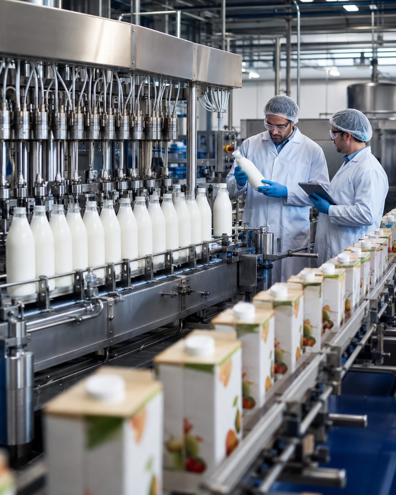
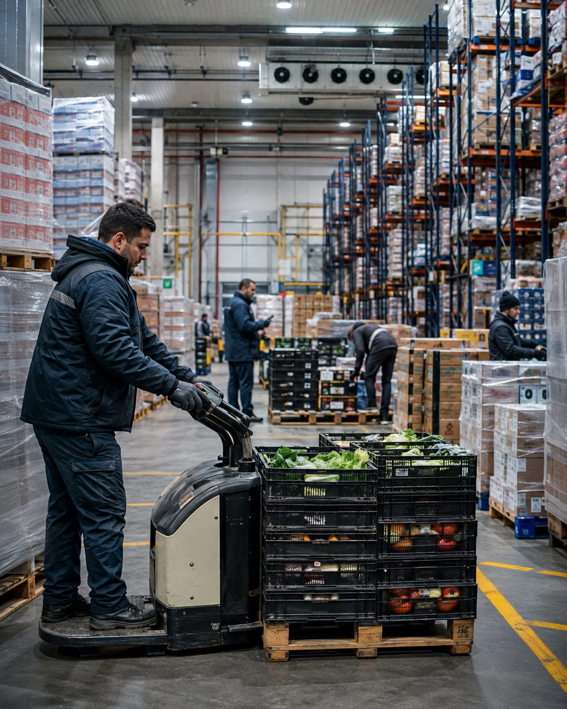
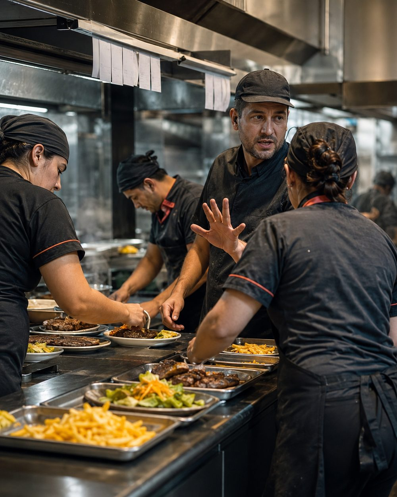
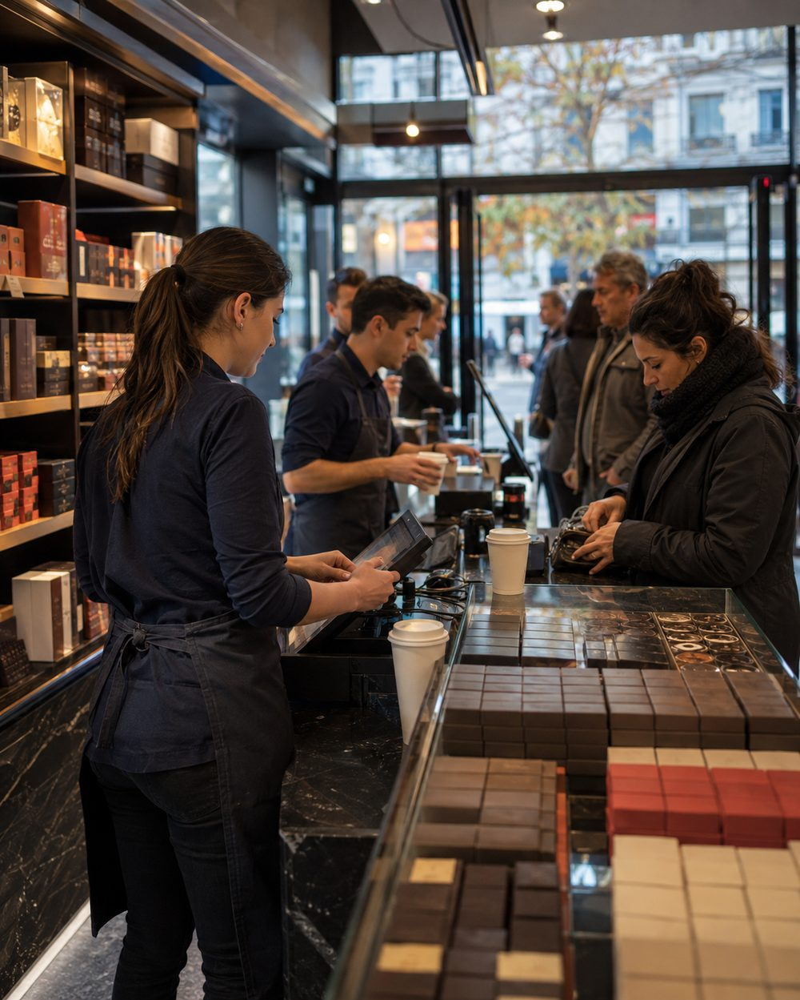
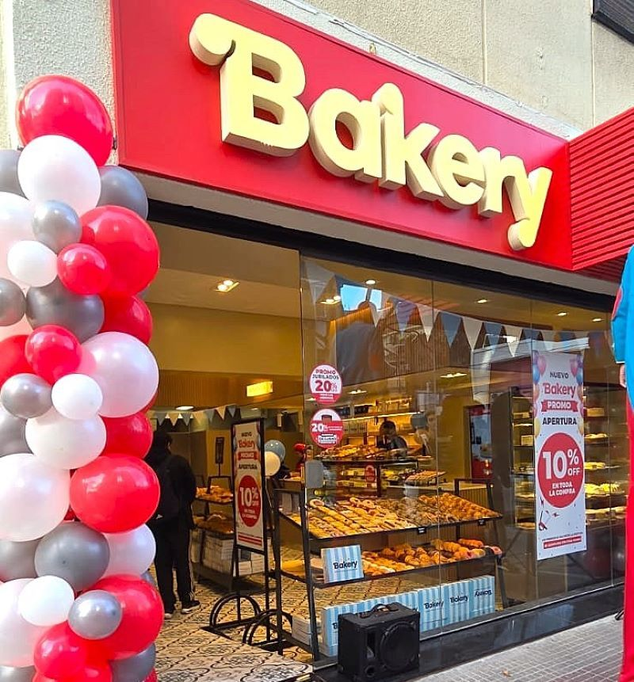

01
Producción
Consistencia desde el origen.
NODUS analiza la operación de cadenas y franquicias del sector alimenticio para transformar procesos informales, decisiones dispersas y diferencias entre locales en un sistema claro, consistente y replicable.
Cuando los procesos dependen de la memoria, las funciones se superponen y todas las decisiones llegan a las mismas personas, el crecimiento empieza a generar fricción.
En la industria alimenticia, crecer exige sostener la calidad mientras aumenta la complejidad.
Nos especializamos en cadenas, franquicias y empresas del sector alimenticio con múltiples puntos de venta o en proceso de expansión. Analizamos cómo se conectan la producción, el abastecimiento, los equipos, los locales y la toma de decisiones para transformar una operación distribuida en un sistema más claro, consistente y replicable.

Consistencia desde el origen.

Disponibilidad en cada punto.

Equipos que operan como un sistema.

La operación frente al cliente.
Un modelo preparado para repetirse.
Cómo está repartida hoy la responsabilidad y dónde ese reparto ya no coincide con lo que la empresa necesita.
El camino real que sigue el trabajo entre áreas, más allá del que está escrito o el que se supone.
Quién decide, con qué información y cuántos pasos de más recorre una decisión antes de ejecutarse.
Qué partes del sistema están listas para dar el siguiente paso, y en qué orden conviene darlo.


Analizamos su funcionamiento para detectar oportunidades de profesionalización en la coordinación, la distribución de responsabilidades y los procesos internos.
Conocer el caso